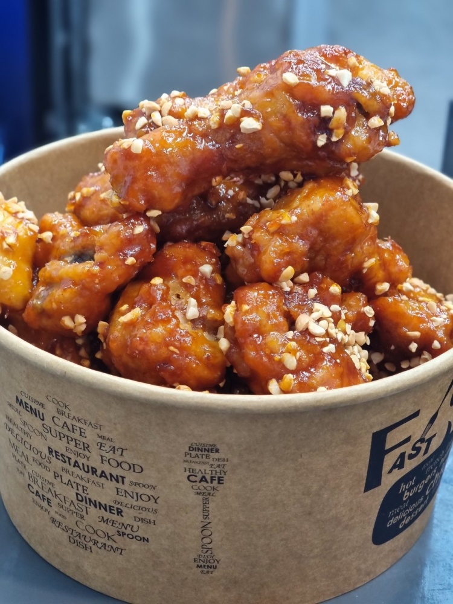

닭강정
닭고기를 튀겨서 졸인 양념과 함께 볶은 음식. 원형은 깐풍기였을 것이라고 추정하는 사람도 있으나, 조리법으로 보나 맛으로 보나 거리가 상당히 있는 별개 음식이다.
미군정 시기 유통 시장을 관리하기 위해 신포시장을 채소 등 식품 거래 시장으로 바꾸고, 양키 시장에서 미군 상품을 거래하도록 제한하기 위한 조치를 취했다. 이전에도 배다리를 통해서 충청도 지역 등지의 식품이 유통되던 신포시장에서는 전국 각지의 상인들이 몰리게 되었고, 저렴한 양계 상품 공급과 먹거리에 대한 상거래인들의 요구가 결합하여 닭강정이 탄생했다.